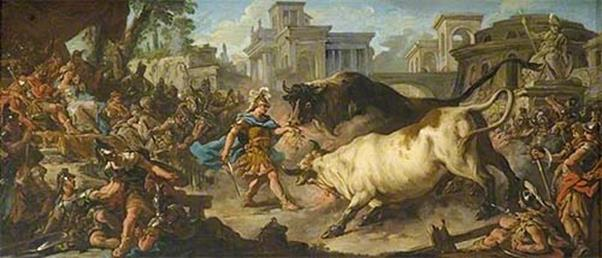

Thực hiện đúng như lời Médée dặn, Jason tắm mình trong dòng nước sông chảy xiết, sau đó chàng mặc bộ áo đen, đào một cái hố sâu, giết con cừu đen tẩm mật ong vàng làm lễ hiến tế dâng nữ thần Hécate. Đoạn chàng ra đi nhằm thẳng đường về phía con thuyền Argo. Nữ thần Hécate đến hưởng lễ vật hiến tế với những tiếng la, tiếng thét tiếng hú nghe rợn cả người. Mặt đất rung chuyển, ánh đuốc trên tay nữ thần tỏa sáng rực một vùng. Khói bốc lên ngùn ngụt. Cùng đi với nữ thần là lũ chó ngao hộ tống sống ở dưới địa ngục. Chúng sủa, hú như chó sói và gầm rồng như hùm beo. Lại còn những con rồng phun lửa uốn lượn quanh nữ thần. Các tiên nữ Nymphe ở núi rừng sông suối thấy Hécate xuất hiện sợ hãi rụng rời, kêu gọi nhau chạy trốn. Jason vừa đi vừa sợ đến rùng mình sởn gáy, lạnh toát cả người. Nhớ lời Médée dặn chàng không dám ngoái nhìn lại phía sau.
Sáng hôm sau như đã ước định trước, những thủy thủ Argonautes phái Télamon và Méléagre đến gặp vua Aiétès để nhận răng rồng về trao cho Jason. Đây là răng của một con rồng mà xưa kia Cadmos trong cuộc hành trình đi tìm người em gái Europe đã giết (người thì gọi là con rồng, người thì gọi là con mãng xà). Trao răng rồng cho những người Hy Lạp xong, Aiétès bèn lên xe đi đến cánh đồng Arès để xem Jason thực hiện những công việc mình giao phó ra sao. Cùng ngồi trên xe với vua cha là chàng Apsyrtos, người con trai yêu quý thường đi hộ tống cho Aiétès trong các cuộc tuần du. Chàng đích thân đánh xe cho vua cha tới cánh đồng sẽ diễn ra cuộc đọ sức quyết liệt giữa Jason và đôi bò mộng hung dữ. Còn những người Argonautes, tất nhiên họ không thể nào bỏ mặc chủ tướng của họ trong cuộc đọ sức này. Ai nấy đều nhung y võ phục khiên giáp sáng ngời đi tới cánh đồng Arès để cổ vũ cho chủ tướng. Nhân dân đô thành Colchide cũng kéo tới xem rất đông.
Jason xuất hiện trên cánh đồng. Từ khi bôi chất “dầu Prométhée” vào người, chàng cảm thấy tràn đầy sinh lực. Bắp thịt, gân cốt của chàng như căng ra và rắn đanh lại. Trong người phấn chấn, náo nức, tự tin một cách kỳ lạ. Đứng giữa cánh đồng trong bộ áo giáp đồng và vũ khí đồng ngời sáng, chàng chói lọi như một ngôi sao trong đêm đen. Chàng đi tìm trên mặt đất khô nẻ chiếc cày sắt và chiếc ách bằng đồng. Sau đó chàng tiến vào ngọn núi đá nơi cư trú của hai con bò hung dữ. Biết có người tiến vào sào huyệt của mình, hai con bò hung dữ từ trong hang đá sâu thẳm lao thẳng ra ngoài. Vừa ra khỏi hang nhìn thấy người là chúng phun lửa. Lửa từ mũi, từ miệng chúng phóng ra thành một vệt dài như đuôi lửa của một ngôi sao đang chạy trốn trong bầu trời đêm. Jason đã sẵn sàng. Chiếc khiên úp trước ngực che kín cả mặt và thân. Đôi bò cứ thế lao thẳng vào người chàng. Mọi người rùng mình nhắm mắt lại tưởng chừng như Jason sẽ bị văng đi đến tận đâu đâu; nhưng không, chàng vẫn đứng hiên ngang, vững chãi như một ngọn núi sừng sững trước phong ba bão táp. Lũ bò hung dữ lại chạy vòng ra xa để lấy đà lao thẳng vào chàng một lần nữa. Lần này Jason bỏ khiên ra và chuẩn bị thắng ách vào vai chúng. Khi lũ bò lao tới, Jason lập tức nắm ngay lấy sừng chúng, mỗi tay một con, ghìm chúng lại. Mọi người đều vô cùng kinh ngạc trước sức mạnh cực kỳ phi thường của chàng. Lũ bò tức giận điên cuồng, đầu chúi xuống, hai chân sau ra sức đạp xuống đất, hất tung cả đất đá lên khiến bụi cát bốc lên mù mịt. Còn Jason cũng lao mình về phía trước, hai chân chàng choãi ra khiến cho người chàng nghiêng chếch đi thư một cây cột buồm bị gió xô, gió đẩy. Lửa từ mũi từ miệng lũ bò phun vào người chàng nhưng vô hiệu. Chính trong lúc ấy hai người anh hùng Castor và Pollux lao tới thắng ách lên vai hai con bò. Thế là xong một việc. Tiếng reo hò vang động khắp trên cánh đồng. “Một con người có sức khỏe bạt núi ngăn sông, lại mình đồng da sắt nữa”. “Lửa cũng phải thua!” “Chà chà, xưa nay chưa từng thấy một con người nào khỏe ghê gớm đến như thế!” Những người Colchide chứng kiến chiến công của Jason trầm trồ thán phục.

Việc thứ hai Jason thực hiện không đến nỗi khó khăn, vất vả như việc trước. Khi đôi bò đã bị đặt ách lên vai thì chúng phải đi theo sự điều khiển của chàng. Jason lấy ngọn lao thay roi thúc vào thân lũ bò, bắt chúng phải kéo cày, bắt chúng phải đi cho ra đường ra lối. Cứ thế chàng cày hết đường cày này đến đường cày khác, cuối cùng cả cánh đồng Arès rộng mênh mông đã được chàng cày xong. Tiếp đó, chàng gieo răng rồng xuống mặt đất đen vừa được lật xới. Gieo xong chàng tháo ách cho lũ bò, thả chúng ra. Đôi bò sung sướng lồng lên chạy một mạch về chiếc hang sâu thẳm của chúng. Trong khi chờ những hạt giống răng rồng mọc lên, Jason ra bờ sông Phasis lấy mũ trụ đồng múc nước rửa mặt và uống vài ngụm cho đỡ khát, nhưng người anh hùng của con thuyền Argo chẳng nghỉ ngơi được bao lâu. Từ mặt đất đen đã được cày xới, phút chốc nhô lên những ngọn lao, ngọn giáo rồi đến mũ trụ đồng, rồi tiếp đến cứ thế trồi lên cả một rừng chiến binh. Một rừng chiến binh khiên giáp sáng ngời oai phong lẫm liệt sát khí đằng đằng. Thật khủng khiếp! Jason bình tĩnh. Chàng không quên lời dặn của Médée. Chàng bê một tảng đá có dễ đến ba, bốn người dũng sĩ Argonautes cũng không khiêng nổi, giơ cao lên đầu ưỡn người về phía sau lấy đà. Vèo một cái chàng ném tảng đá đó vào giữa đạo quân đông đảo vừa mọc lên từ dưới đất đen đã được cày xới. Lập tức đội quân đó chia thành hai phe xông vào nhau chém giết. Cảnh tượng vô cùng khốc liệt. Thây người ngã xuống nằm dài trên mặt đất như những bông lúa ngày mùa bị lưỡi liềm của những người đi gặt cắt lìa khỏi thân, đặt nằm ngã dài trên những ruộng đất khô nẻ. Jason chờ cho lũ người sinh ra từ răng rồng đó chém giết nhau đã vãn, khi đó chàng mới xông vào cuộc chiến và giết hết những tên còn lại. Vua Aiétès vô cùng sửng sốt trước chiến công của chàng, nhưng nhà vua không tỏ lòng khâm phục mà lại bừng bừng nổi giận ra lệnh cho người con trai của mình đánh xe về hoàng cung ngay. Nhà vua vẫn nuôi giữ những ý nghĩ thù địch với người Hy Lạp và giờ đây mưu toan hạ sát Jason. Còn Jason, trong tiếng reo hò của những người Argonautes sung sướng đến tột độ vì chiến thắng, cúi đầu kính cẩn đáp lễ, sau đó trở về con thuyền Argo.